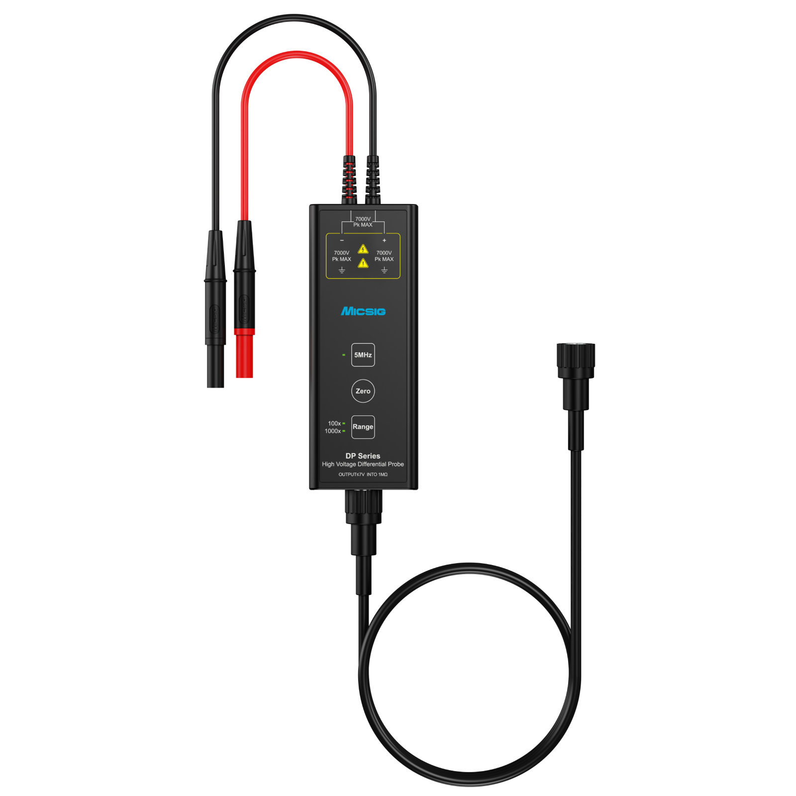

Micsig DP High-Voltage Differential Probe
The Micsig DP Series measures the voltage difference between two input points. Bandwidth, attenuation, maximum differential input and output impedance depend on the exact DP model.
Ask about this product
Key specifications
India price list
Prices supplied by VIANOVA INDUSTRIAL SOLUTIONS; subject to confirmation and availability. Our selling prices exclude GST. Confirm final taxes and quotation before ordering.
| Model | Specification | Our selling price (excl. GST) | MRP |
|---|---|---|---|
| DP7002 | 7000 Vpk; 200 MHz; 100X / 1000X | ₹75,554.69 | ₹89,154.53 |
| DP7000 | 7000 Vpk; 100 MHz; 100X / 1000X | ₹69,617.19 | ₹82,148.28 |
| DP3002 | 3000 Vpk; 200 MHz; 50X / 500X | ₹39,929.69 | ₹47,117.03 |
| DP3000 | 3000 Vpk; 100 MHz; 50X / 500X | ₹28,054.69 | ₹33,104.53 |
| DP1502 | 1500 Vpk; 200 MHz; 50X / 500X | ₹39,929.69 | ₹47,117.03 |
| DP1500 | 1500 Vpk; 100 MHz; 50X / 500X | ₹26,570.31 | ₹31,352.97 |
| DP702 | 700 Vpk; 200 MHz; 20X / 200X | ₹39,929.69 | ₹47,117.03 |
| DP700 | 700 Vpk; 100 MHz; 20X / 200X | ₹25,085.94 | ₹29,601.41 |
Request a confirmed price and availability →
Applications
The product introduction highlights floating high-common-mode measurements, switching FET measurements and power-supply testing.
Specifications and configurations vary by model. Confirm the exact model and its operating limits in the linked Micsig PDF before selection.
Open Micsig datasheet / brochure Compare the High-voltage differential probes category →
Product enquiries in India
Vianova Industrial Solutions is an authorised Micsig distributor for India. Contact the Ghaziabad team for model selection, current availability and quotations.